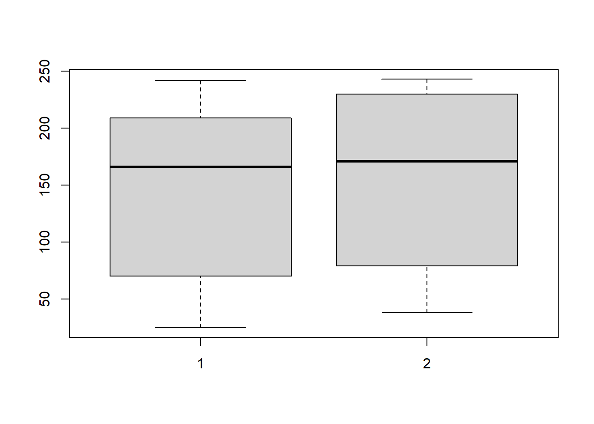
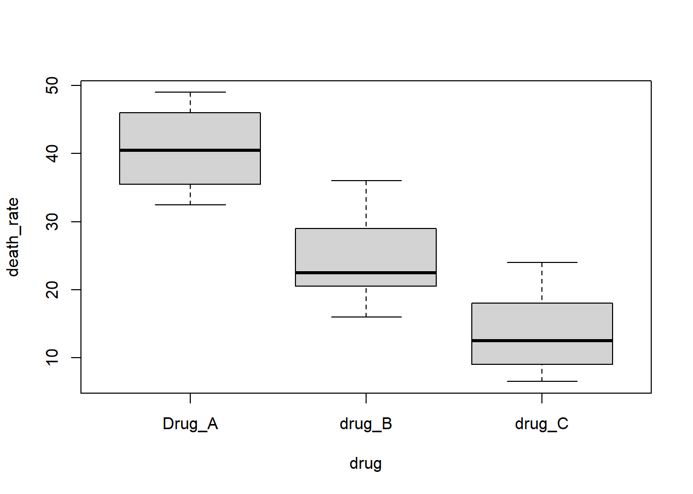

test1<-c(60,142,195,80,242,220,190,25,198,38,236,95)
test2<-c(76,152,243,82,240,220,205,38,243,44,190,100)7 秩和检验
7.1 配对样本比较的Wilcoxon符号秩检验
使用课本例8-1的数据，自己手动摘录：
两列数据，和配对t检验的数据结果完全一样。
简单看一下数据情况：
boxplot(test1,test2)
进行秩和检验：
wilcox.test(test1,test2,paired = T,alternative = "two.sided",
exact = F, correct = F)
##
## Wilcoxon signed rank test
##
## data: test1 and test2
## V = 11.5, p-value = 0.05581
## alternative hypothesis: true location shift is not equal to 0结果和课本一致！
7.2 两独立样本比较的Wilcoxon符号秩检验
和两样本t检验的数据格式完全一样！
使用课本例8-3的数据，自己手动摘录。。
RD1<-c(2.78,3.23,4.20,4.87,5.12,6.21,7.18,8.05,8.56,9.60)
RD2<-c(3.23,3.50,4.04,4.15,4.28,4.34,4.47,4.64,4.75,4.82,4.95,5.10)进行两独立样本比较的Wilcoxon符号秩检验：
wilcox.test(RD1,RD2,paired = F, correct = F)
## Warning in wilcox.test.default(RD1, RD2, paired = F, correct = F): cannot
## compute exact p-value with ties
##
## Wilcoxon rank sum test
##
## data: RD1 and RD2
## W = 86.5, p-value = 0.08049
## alternative hypothesis: true location shift is not equal to 0结果取单侧检验，还是和课本一致！
7.3 完全随机设计多个样本比较的 Kruskal-Wallis H 检验
7.3.1 多样本比较的kruskal-wallis H检验
使用课本例8-5的数据，手动摘录：
rm(list = ls())
death_rate <- c(32.5,35.5,40.5,46,49,16,20.5,22.5,29,36,6.5,
9.0,12.5,18,24)
drug <- rep(c("Drug_A","drug_B","drug_C"),each=5)
mydata <- data.frame(death_rate,drug)
str(mydata)
## 'data.frame': 15 obs. of 2 variables:
## $ death_rate: num 32.5 35.5 40.5 46 49 16 20.5 22.5 29 36 ...
## $ drug : chr "Drug_A" "Drug_A" "Drug_A" "Drug_A" ...数据一共2列，第1列是死亡率，第2列是药物（3种）。
简单看下数据：
boxplot(death_rate ~ drug, data = mydata)
进行 Kruskal-Wallis H 检验：
kruskal.test(death_rate ~ drug, data = mydata)
##
## Kruskal-Wallis rank sum test
##
## data: death_rate by drug
## Kruskal-Wallis chi-squared = 9.74, df = 2, p-value = 0.007673算出来结果和课本一致！
7.3.2 kruskal-Wallis H检验后的多重比较
课本上是使用的 Nemenyi检验，我们使用非参数检验的全能R包：PMCMRplus实现。
library(PMCMRplus)
# 首先要把分类变量因子化
mydata$drug <- factor(mydata$drug)下面就可以使用 Nemenyi检验了。
# 也可以把kwh检验的结果作为输入
res <- kwAllPairsNemenyiTest(death_rate ~ drug, data = mydata)
summary(res)
##
## Pairwise comparisons using Tukey-Kramer-Nemenyi all-pairs test with Tukey-Dist approximation
## data: death_rate by drug
## alternative hypothesis: two.sided
## P value adjustment method: single-step
## H0
## q value Pr(>|q|)
## drug_B - Drug_A == 0 2.5 0.1805089
## drug_C - Drug_A == 0 4.4 0.0052932 **
## drug_C - drug_B == 0 1.9 0.3710425
## ---
## Signif. codes: 0 '***' 0.001 '**' 0.01 '*' 0.05 '.' 0.1 ' ' 17.4 随记区组设计多个样本比较的 Friedman M 检验
7.4.1 多个相关样本比较的Friedman M检验
使用课本例8-9的数据：
df <- foreign::read.spss("datasets/例08-09.sav", to.data.frame = T)
str(df)
## 'data.frame': 8 obs. of 4 variables:
## $ a: num 8.4 11.6 9.4 9.8 8.3 8.6 8.9 7.8
## $ b: num 9.6 12.7 9.1 8.7 8 9.8 9 8.2
## $ c: num 9.8 11.8 10.4 9.9 8.6 9.6 10.6 8.5
## $ d: num 11.7 12 9.8 12 8.6 10.6 11.4 10.8
## - attr(*, "codepage")= int 65001数据一共4列，分别是4中不同频率下的反应率。
简单看下数据：
boxplot(df$a,df$b,df$c,df$d)
进行 Friedman M 检验前先把数据格式转换一下：
M <- as.matrix(df) # 变成矩阵进行 Friedman M 检验：
friedman.test(M)
##
## Friedman rank sum test
##
## data: M
## Friedman chi-squared = 15.152, df = 3, p-value = 0.001691结果和课本一致！
7.4.2 多个相关样本两两比较的q检验
P126页，多个相关样本两两比较的q检验。课本上说的这个q检验，应该是quade tes。
接下来就是使用R语言实现quade-test。但是自带的 quade.test()函数不能进行两两比较，还是要借助第三方包。
# 准备数据，也是用的课本例8-9的数据
df <- matrix(
c(8.4, 11.6, 9.4, 9.8, 8.3, 8.6, 8.9, 7.8,
9.6, 12.7, 9.1, 8.7, 8, 9.8, 9, 8.2,
9.8, 11.8, 10.4, 9.9, 8.6, 9.6, 10.6, 8.5,
11.7, 12, 9.8, 12, 8.6, 10.6, 11.4, 10.8
),
byrow = F, nrow = 8,
dimnames = list(1:8,LETTERS[1:4])
)
print(df)
## A B C D
## 1 8.4 9.6 9.8 11.7
## 2 11.6 12.7 11.8 12.0
## 3 9.4 9.1 10.4 9.8
## 4 9.8 8.7 9.9 12.0
## 5 8.3 8.0 8.6 8.6
## 6 8.6 9.8 9.6 10.6
## 7 8.9 9.0 10.6 11.4
## 8 7.8 8.2 8.5 10.8先进行 Friedman M检验看看：
friedman.test(df)
##
## Friedman rank sum test
##
## data: df
## Friedman chi-squared = 15.152, df = 3, p-value = 0.001691接下来进行quade检验：
library(PMCMRplus)
quadeAllPairsTest(df, dist = "Normal")
##
## Pairwise comparisons using Quade's test with standard-normal approximation
## data: df
## A B C
## B 0.2200 - -
## C 0.0017 0.0644 -
## D 1.7e-07 7.7e-05 0.0860
##
## P value adjustment method: holm当然也可以有更加详细的结果：
res <- quadeAllPairsTest(df,dist = "Normal")
toTidy(res)
## group1 group2 statistic p.value alternative
## 1 B A 1.226488 2.200150e-01 two.sided
## 2 C A 3.526154 1.686568e-03 two.sided
## 3 C B 2.299666 6.440153e-02 two.sided
## 4 D A 5.549859 1.715396e-07 two.sided
## 5 D B 4.323371 7.683144e-05 two.sided
## 6 D C 2.023706 8.600089e-02 two.sided
## method distribution p.adjust.method
## 1 Quade's testwith standard-normal approximation z holm
## 2 Quade's testwith standard-normal approximation z holm
## 3 Quade's testwith standard-normal approximation z holm
## 4 Quade's testwith standard-normal approximation z holm
## 5 Quade's testwith standard-normal approximation z holm
## 6 Quade's testwith standard-normal approximation z holm这个结果和课本上也不是完全一样，不过不影响结果。还有很多其他的方法可以选择，除了这个quade检验，还可以用Nemenyi等检验方法。